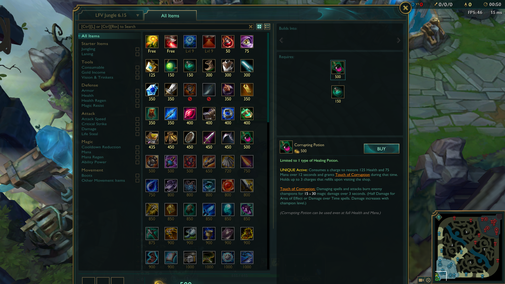
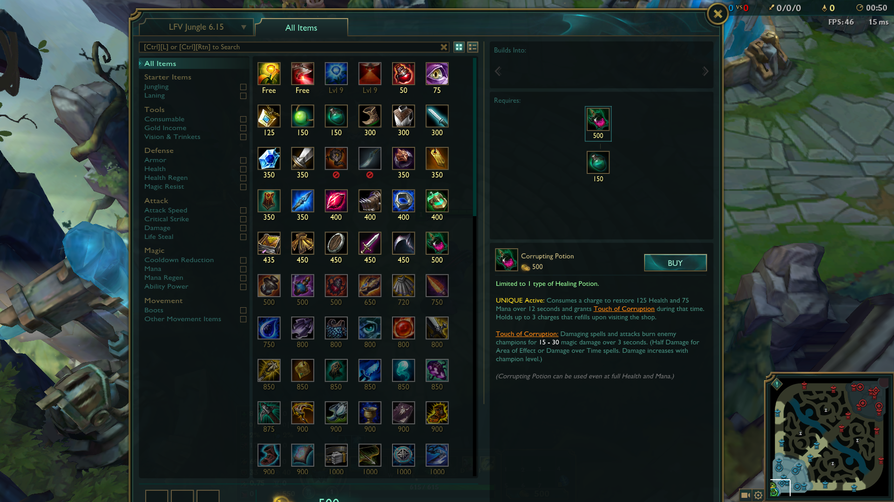

League of Legends is team based MOBA created by Riot Games. The objective of the game is to destroy the enemy nexus. To do this, you and your team have to work together to destroy enemy turrets that are between you and the nexus. There 139 champions in League of Legends (Riot, n.d.) each with their unique playstyles. Assassins specialize in destroying squishy targets, tanks take minimal damage and deal little in return, supports either buff allied champions or engage for the team, and ranged damage dealers who deal damage from afar but are usually weak in defenses. League of Legends is popular worldwide and people are even playing the game professionally. League of Legends is constantly evolving with the addition of new champions and items in the game (Riot, n.d.). This has always kept League of Legends fresh and exciting to play.
All information on game updates, eSports, and the community can be found on the official League of Legends website: leagueoflegends.com


League of Legends is very popular worldwide. Each year, the best teams in each region, NA, EU, Korea, China, and Latin America come together to worlds. The best teams compete to become the worlds best. Korea is currently the most dominant region but other regions like China and NA are slowly catching up. To qualify for Worlds, you need to be the best in your home region first. Teams compete in both spring and summer splits for the chance at becoming the number one seed in their region. The top three seeds of each region are accepted to participate at Worlds (LolEsports, 2017).
Results of professional games and player interviews can be found on the League of Legends eSports website: lolesports.com


League of Legends is a team based MOBA game. The goal of the game is to destroy the enemy team's nexus. This is done by destroying enemy turrets and inhibitors. There are three maps to choose from: Summoners Rift, the 5v5 map, Twisted Treeline, the 3v3 map, and The Howling Abyss, the ARAM map which stands for All Random All Mid (LeagueofLegendsWiki, 2017). Summoners Rift is the most iconic map and by far the most popular. The map has the iconic three lane pattern that is seen in many other MOBA's like DOTA. There are two teams in League of Legends, each having five players: blue side and red side.


The characters in the game are called champions. Every champion in League of Legends is different. All champions have an auto attack, a passive ability, four active abilities which are the champions skills. An auto attack is the default way a unit deals damage. Champions perform basic attacks when an enemy unit is right-clicked on. You can upgrade champion skills by getting exp leveling up. This can be achieved by killing minions and champions. Additionally, every champion gets two summoners spells. These spells are chosen by the player before game and usually grant movement or survivability at a cost of an extra long cooldown. Summoners must be selected before the game begins and cannot be changed in the middle of a game. Every champion in League of Legends has their own unique champion skill set.
A full list of champions can be found here: Champions
On Summoners Rift there are three lanes: top, mid, bot, and a jungle.
| Lane | Types of Champions in Lane |
|---|---|
| Top | Mainly Bruisers and Tanks |
| Mid | Mages and Assassins |
| Bot | Two Champions. A ranged damage dealer called the ADC and a support who protects the ADC |
| Jungle | Jungle is not a lane. All champions can be played jungle but some champions are just better suited for this role |

A key aspect of League of Legends, are runes and items. Runes grant players extra survivability, damage, or utility in a game. There are five rune trees to chose from: Precision, Domination, Sorcery, Resolve, and Inspiration.
| Rune Tree | Granted Abilities |
|---|---|
| Precision | Improved sustain damage and auto attacks |
| Domination | Burst damage and target access |
| Sorcery | Improved abilities and resource manipulation |
| Resolve | Durability and crowd control |
| Inspiration | Rule bending and creative tools |
Players can only choose one main rune path and one secondary rune path. Each rune tree has three keystones and nine secondary runes. You can only choose one keystone and three secondary runes. There is also a secondary rune tree where you can choose two secondary runes from another tree (Riot, 2017). Runes must be configured before a game has begun. After the game has started, runes cannot be reconfigured.
Another very important aspect of League of Legends are items. Items are bought in game using gold, the currency in League of Legends and you can only have six items at a time. Gold can be obtained generally by killing enemy champions, farming minions, and destroying turrets. To buy items, you have to be on the summoners platform of your team, the place you spawned on. An easy way to get there is by recalling. Items build on to each other until they have become a full item. This means that you don't have to save up all the gold to buy one completed item. Items give players more damage, survivability, and utility, much runes. Most items also grant champions passive, active, or both abilities. Passive abilities are constant and don't need to be activated. Active abilities are like normal abilities but instead, they are activated from the item box.
 


This website was created by Thomas Zhou. He is a high school student at Victoria Park C.I. He is taking computer science with Mr. Arkin.